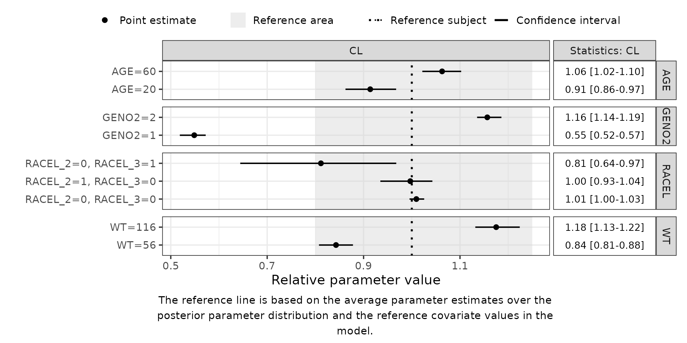
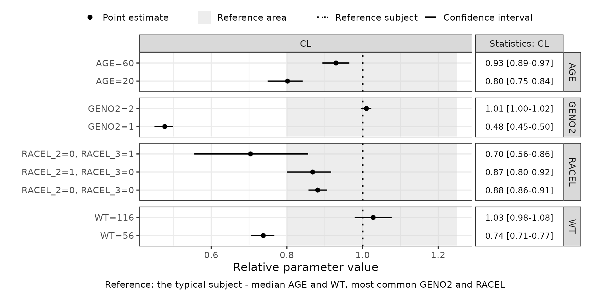
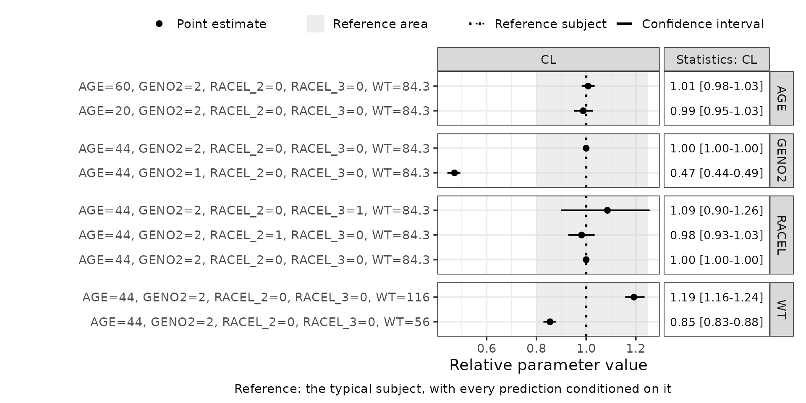
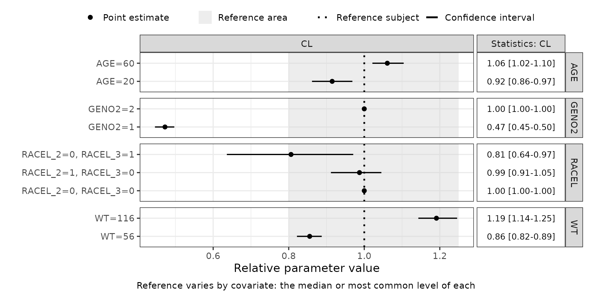
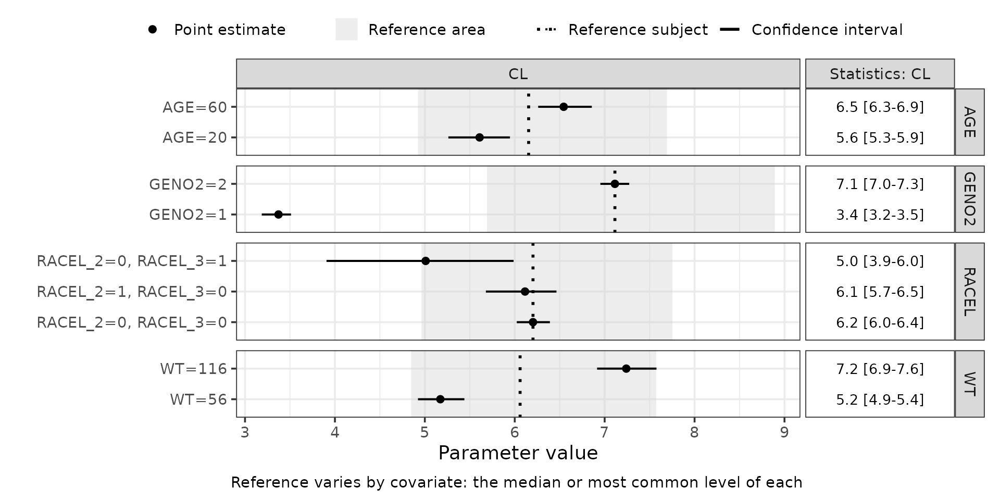

3. Deep Dive: Reconciling FREM and SCM Forest Plots
Part3-deep-dive-forest-plot-references.RmdIntroduction
A Forest plot of the same covariate, drawn from an SCM model and from a FREM model of the same data, can point in opposite directions without either being wrong. They answer different questions, and the difference is not in the estimation but in two choices made when the plot is drawn: what the predictions are conditioned on, and what they are compared against.
This vignette shows which question each plot answers, and how to make one FREM model produce either.
1. Conditional and unconditional covariate effects
A conditional covariate effect is the isolated effect of one covariate with every other covariate held fixed. It supports a mechanistic reading - what this covariate does, once the others are accounted for - and it requires a multivariable model.
An unconditional covariate effect is the total effect of a covariate, whatever else it travels with in the population. It supports label statements and dosing recommendations - what to expect of a subject known only by this one covariate - and it is what a univariable model estimates.
An SCM produces one multivariable model, so its Forest plot is conditional. FREM estimates the covariates jointly and can be reduced to any subset of them, so a single FREM model can answer either question. Which one it answers depends on how the plot is set up.
2. What the two defaults do
| SCM | FREM (default) | |
|---|---|---|
| Predictions | conditional on all other covariates | unconditional |
| Reference | a typical subject as the model is parameterised - centred on the median, or the most common category | a typical subject as the data defines it: the mean predicted parameter value across the covariates |
Neither default is the “right” one. They differ because the two methods were built for different readings, which is why the same covariate can sit on opposite sides of 1 in the two plots.
3. The two controls
Everything below is done with two inputs, and both are built by PMXForest rather than assembled by hand:
-
dfCovs, fromsetupDfCovs()- one row per Forest plot row. The covariates active in a row are the ones the prediction is conditioned on. WithuseMissVal = TRUE(the default) every other covariate is left atmissValand only one is active per row; withuseMissVal = FALSEthe inactive ones are set to their reference value instead, which conditions every row on them. -
dfRefRow, fromsetupDfRefRow()- the covariate values the predictions are compared against.singleRef = TRUEreturns one row, and that same comparator is used by every row of the plot.singleRef = FALSEreturns a data frame with as many rows asdfCovs, so each row of the plot gets its own comparator. Passing nodfRefRowat all leaves the FREM default in place.
Both take contRef and catRef to say what “reference” means for each covariate - a number, "mean", "median", "mode", "lowest", or "model" to read it from the control stream. The defaults are the median of a continuous covariate and the most common level of a categorical one.
The other choice is the scale: plotRelative = TRUE plots each row as a ratio to its reference, FALSE on the parameter’s own scale.
4. Setup
library(PMXFrem)
library(PMXForest)
library(ggplot2)
library(data.table)
set.seed(865765)
theme_set(theme_bw(base_size = 14))
modDevDir <- system.file("extdata/SimNeb", package = "PMXFrem")
fremFiles <- getFileNames(modName = "run31", modDevDir = modDevDir)
data <- fread(
file.path(modDevDir, "DAT-2-MI-PMX-2-onlyTYPE2-new.csv"),
data.table = FALSE
)
covariates <- c("AGE", "GENO2", "RACEL", "WT")Four covariates are enough to make the point, and keep the plots readable:
dfCovs <- setupDfCovs(
data = data,
covariates = covariates,
probs = c(0.05, 0.9),
idVar = "ID",
missVal = -99
)
dfCovs
#> AGE GENO2 RACEL_2 RACEL_3 WT COVARIATEGROUPS
#> 1 20 -99 -99 -99 -99 AGE
#> 2 60 -99 -99 -99 -99 AGE
#> 3 -99 1 -99 -99 -99 GENO2
#> 4 -99 2 -99 -99 -99 GENO2
#> 5 -99 -99 0 0 -99 RACEL
#> 6 -99 -99 1 0 -99 RACEL
#> 7 -99 -99 0 1 -99 RACEL
#> 8 -99 -99 -99 -99 56 WT
#> 9 -99 -99 -99 -99 116 WTEach row sets one covariate and leaves the rest at missVal. What that means depends on the model behind the parameter function. In a FREM model the covariates left at missVal are integrated out, so the prediction is unconditional. In an SCM or FFEM parameter function there is nothing to integrate over: missVal triggers the model’s own missing-covariate handling, which puts the covariate at its reference - so the prediction is conditioned on the reference values rather than unconditional. Same dfCovs, two different readings, which is where the two plots start to diverge.
dfExt <- subset(getExt(extFile = fremFiles$ext), ITERATION == "-1000000000")
dfParameters <- getSamples(fremFiles$cov, extFile = fremFiles$ext, n = 100)
dfParameters[1, ] <- dfExt[1, -1] # first sample = the final estimates
# CL is THETA(2) in run31, and the model's first FREM parameter
functionList <- list(
function(basethetas, covthetas, ...) basethetas[2] * exp(covthetas[1])
)RACEL is coded 1 Caucasian, 2 Black and 3 Asian, with level 1 as the reference, so the one-hot columns RACEL_2 and RACEL_3 carry the other two.
For didactic purposes in this vignette, the default labels are kept in full. The varying dimensions of the resulting plots are managed through the small wrapper function below.
fp <- function(dfres, left = 30, relative = TRUE, ...) {
forestPlot(dfres,
parameters = "CL", plotRelative = relative,
errbartabwidth = c(3, 1), ...
) +
theme(plot.margin = margin(5.5, 5.5, 5.5, left))
}5. The FREM default: unconditional
dfres_default <- getForestDFFREM(
dfCovs = dfCovs,
runno = 31,
modDevDir = modDevDir,
dfParameters = dfParameters,
functionList = functionList,
functionListName = "CL",
quiet = TRUE
)
data.frame(
row = dfres_default$COVNAME,
CL = round(dfres_default$POINT, 3),
reference = round(dfres_default$REFFUNC, 3),
relative = round(dfres_default$POINT / dfres_default$REFFUNC, 3)
)
#> row CL reference relative
#> 1 AGE=20 5.609 6.151 0.912
#> 2 AGE=60 6.544 6.151 1.064
#> 3 GENO2=1 3.373 6.151 0.548
#> 4 GENO2=2 7.114 6.151 1.157
#> 5 RACEL_2=0, RACEL_3=0 6.203 6.151 1.009
#> 6 RACEL_2=1, RACEL_3=0 6.114 6.151 0.994
#> 7 RACEL_2=0, RACEL_3=1 5.009 6.151 0.814
#> 8 WT=56 5.172 6.151 0.841
#> 9 WT=116 7.240 6.151 1.177The same reference value for every row, and each row varies one covariate only.
fp(dfres_default)
6. Moving the reference
The reference need not be the one FREM computes from the data. setupDfRefRow() builds one from the covariates themselves - here the typical subject an SCM model would be centred on, the median of each continuous covariate and the most common level of each categorical one:
dfRefRow <- setupDfRefRow(
dfCovs = dfCovs,
data = data,
covariates = covariates,
singleRef = TRUE
)
dfRefRow
#> AGE GENO2 RACEL_2 RACEL_3 WT COVARIATEGROUPS
#> 1 44 2 0 0 84.3 Reference
dfres_typRef <- getForestDFFREM(
dfCovs = dfCovs,
runno = 31,
modDevDir = modDevDir,
dfParameters = dfParameters,
functionList = functionList,
functionListName = "CL",
dfRefRow = dfRefRow,
quiet = TRUE
)
c(default = dfres_default$REFFUNC[1], typical = dfres_typRef$REFFUNC[1])
#> default typical
#> 6.150591 7.037293Every point estimate is unchanged - only what they are divided by has moved, so the whole plot shifts. The predictions are still unconditional.
fp(dfres_typRef,
referenceInfo = "Reference: the typical subject - median AGE and WT, most common GENO2 and RACEL"
)
7. Conditioning the predictions: mimicking SCM
To read the plot the way an SCM plot is read, the predictions have to be conditioned as well. That is useMissVal = FALSE: the covariates a row is not varying are set to their reference instead of to missVal.
dfCovsCond <- setupDfCovs(
data = data,
covariates = covariates,
probs = c(0.05, 0.9),
idVar = "ID",
missVal = -99,
useMissVal = FALSE
)
dfCovsCond
#> AGE GENO2 RACEL_2 RACEL_3 WT COVARIATEGROUPS
#> 1 20 2 0 0 84.3 AGE
#> 2 60 2 0 0 84.3 AGE
#> 3 44 1 0 0 84.3 GENO2
#> 4 44 2 0 0 84.3 GENO2
#> 5 44 2 0 0 84.3 RACEL
#> 6 44 2 1 0 84.3 RACEL
#> 7 44 2 0 1 84.3 RACEL
#> 8 44 2 0 0 56.0 WT
#> 9 44 2 0 0 116.0 WT
dfres_scm <- getForestDFFREM(
dfCovs = dfCovsCond,
runno = 31,
modDevDir = modDevDir,
dfParameters = dfParameters,
functionList = functionList,
functionListName = "CL",
dfRefRow = dfRefRow,
quiet = TRUE
)
data.frame(
row = dfres_scm$COVNAME,
relative_SCM = round(dfres_scm$POINT / dfres_scm$REFFUNC, 3)
)
#> row relative_SCM
#> 1 AGE=20, GENO2=2, RACEL_2=0, RACEL_3=0, WT=84.3 0.985
#> 2 AGE=60, GENO2=2, RACEL_2=0, RACEL_3=0, WT=84.3 1.009
#> 3 AGE=44, GENO2=1, RACEL_2=0, RACEL_3=0, WT=84.3 0.470
#> 4 AGE=44, GENO2=2, RACEL_2=0, RACEL_3=0, WT=84.3 1.000
#> 5 AGE=44, GENO2=2, RACEL_2=0, RACEL_3=0, WT=84.3 1.000
#> 6 AGE=44, GENO2=2, RACEL_2=1, RACEL_3=0, WT=84.3 0.981
#> 7 AGE=44, GENO2=2, RACEL_2=0, RACEL_3=1, WT=84.3 1.088
#> 8 AGE=44, GENO2=2, RACEL_2=0, RACEL_3=0, WT=56 0.854
#> 9 AGE=44, GENO2=2, RACEL_2=0, RACEL_3=0, WT=116 1.192Every row now carries every covariate, and the reference is that same typical subject - which is what an SCM Forest plot shows. This is also visible in the y-axis labels, kept here at their default: each covariate value that is not missVal is included in the label.
# the conditioned labels are long, so this one needs a wider margin
fp(dfres_scm,
left = 95,
referenceInfo = "Reference: the typical subject, with every prediction conditioned on it"
)
8. A reference that varies by covariate group
The unconditional reading is sharper when each covariate is compared against its own reference rather than against one subject. That is singleRef = FALSE, which returns a reference row per row of dfCovs:
dfRefRowVarying <- setupDfRefRow(
dfCovs = dfCovs,
data = data,
covariates = covariates,
singleRef = FALSE
)
dfRefRowVarying
#> AGE GENO2 RACEL_2 RACEL_3 WT COVARIATEGROUPS
#> 1 44 -99 -99 -99 -99.0 AGE
#> 2 44 -99 -99 -99 -99.0 AGE
#> 3 -99 2 -99 -99 -99.0 GENO2
#> 4 -99 2 -99 -99 -99.0 GENO2
#> 5 -99 -99 0 0 -99.0 RACEL
#> 6 -99 -99 0 0 -99.0 RACEL
#> 7 -99 -99 0 0 -99.0 RACEL
#> 8 -99 -99 -99 -99 84.3 WT
#> 9 -99 -99 -99 -99 84.3 WT
dfres_varRef <- getForestDFFREM(
dfCovs = dfCovs,
runno = 31,
modDevDir = modDevDir,
dfParameters = dfParameters,
functionList = functionList,
functionListName = "CL",
dfRefRow = dfRefRowVarying,
quiet = TRUE
)
data.frame(
row = dfres_varRef$COVNAME,
reference = round(dfres_varRef$REFFUNC, 3),
relative = round(dfres_varRef$POINT / dfres_varRef$REFFUNC, 3)
)
#> row reference relative
#> 1 AGE=20 6.154 0.911
#> 2 AGE=60 6.154 1.063
#> 3 GENO2=1 7.114 0.474
#> 4 GENO2=2 7.114 1.000
#> 5 RACEL_2=0, RACEL_3=0 6.203 1.000
#> 6 RACEL_2=1, RACEL_3=0 6.203 0.986
#> 7 RACEL_2=0, RACEL_3=1 6.203 0.808
#> 8 WT=56 6.059 0.854
#> 9 WT=116 6.059 1.195Each covariate group now sits at 1 for its own reference level:
fp(dfres_varRef,
referenceInfo = "Reference varies by covariate: the median or most common level of each"
)
On the relative scale the varying reference is invisible - every group is divided by its own value, so every group has a line at 1. On the absolute scale it can be seen: the reference moves between covariate groups.
fp(dfres_varRef,
relative = FALSE,
referenceInfo = "Reference varies by covariate: the median or most common level of each"
)
9. Which plot answers which question
The two readings can disagree, and on this model they do. Take Asian subjects - RACEL level 3:
# the dfCovs row for Asian subjects. Match on the row number rather than
# the label: conditioning rewrites the label to carry every covariate it fixes.
iRacel3 <- which(dfCovs$COVARIATEGROUPS == "RACEL" & dfCovs$RACEL_3 == 1)
pick <- function(d) {
r <- d[d$COVNUM == iRacel3, ]
round(r$POINT / r$REFFUNC, 3)
}
c(unconditional = pick(dfres_varRef), conditional = pick(dfres_scm))
#> unconditional conditional
#> 0.808 1.088- Unconditional, 0.808 of the reference: a subject known only to be Asian can be expected to have a lower CL than a Caucasian one. This is the reading for a label statement or a dosing recommendation.
- Conditional, 1.088 of the reference: an Asian subject who is otherwise typical can be expected to have a slightly higher CL than an otherwise identical Caucasian subject. This is the mechanistic reading, and the one an SCM Forest plot gives.
Neither number is wrong. They answer different questions, and a plot that does not say which one it answers invites the reader to take the wrong one.